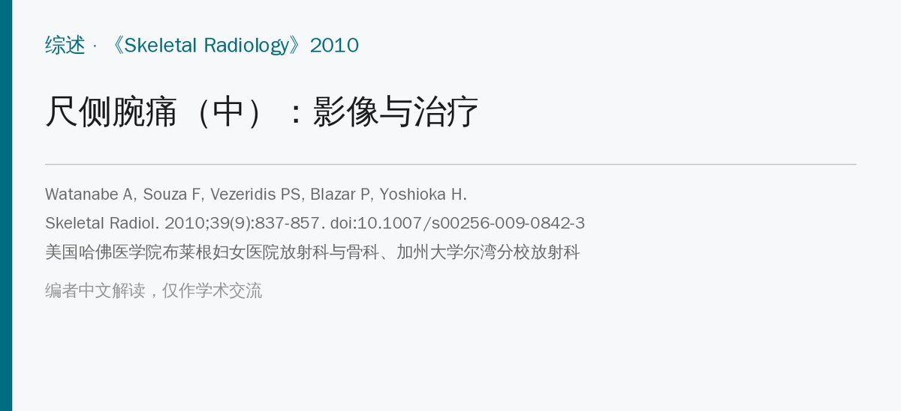
🔖原文信息（编者中文重排）
📚 文献信息
▪ Watanabe A, Souza F, Vezeridis PS, Blazar P, Yoshioka H. Ulnar-sided wrist pain. II. Clinical imaging and treatment. Skeletal Radiology. 2010;39(9):837-857. doi:10.1007/s00256-009-0842-3
▪ 作者单位：美国哈佛医学院布莱根妇女医院放射科与骨科、加州大学尔湾分校放射科
▪ 文章类型：叙述性综述（尺侧腕痛系列第二篇：上篇讲解剖与查体，本篇讲影像和治疗，下篇讲运动员尺侧腕痛）
• 影像从 X 线开始；查 TFCC、韧带、骨髓水肿靠高分辨率磁共振，磁共振关节造影可能是 TFCC 最准的检查；隐匿骨折（尤其钩骨钩）首选 CT；动态问题（尺侧腕伸肌腱半脱位）用超声
• 肌腱炎、豌豆三角关节炎、月三角损伤多数保守治疗有效，手术是保守失败后的选择
• TFCC 撕裂怎么处理，看撕在哪儿：周边有血供能修补，中央无血供只能清理；合并尺骨正变异要同时短缩尺骨
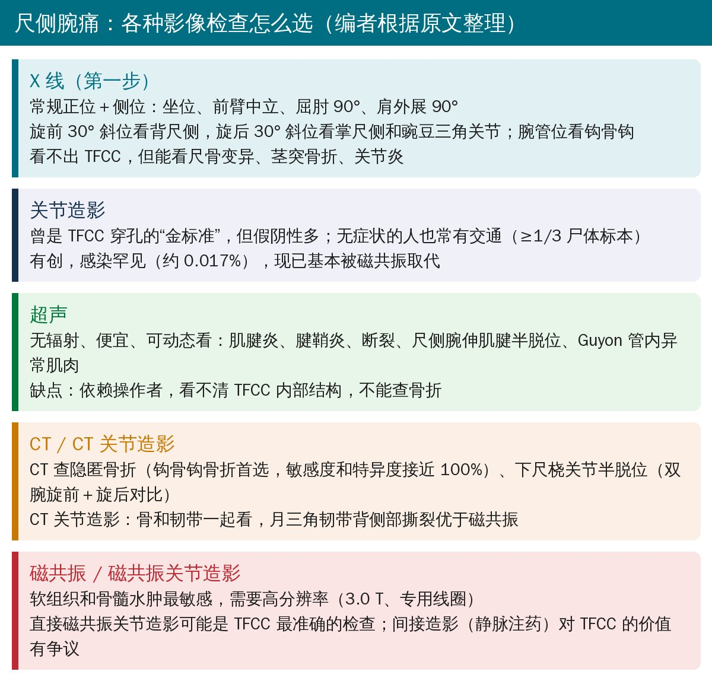
🔖各种影像检查怎么选（编者根据原文整理）
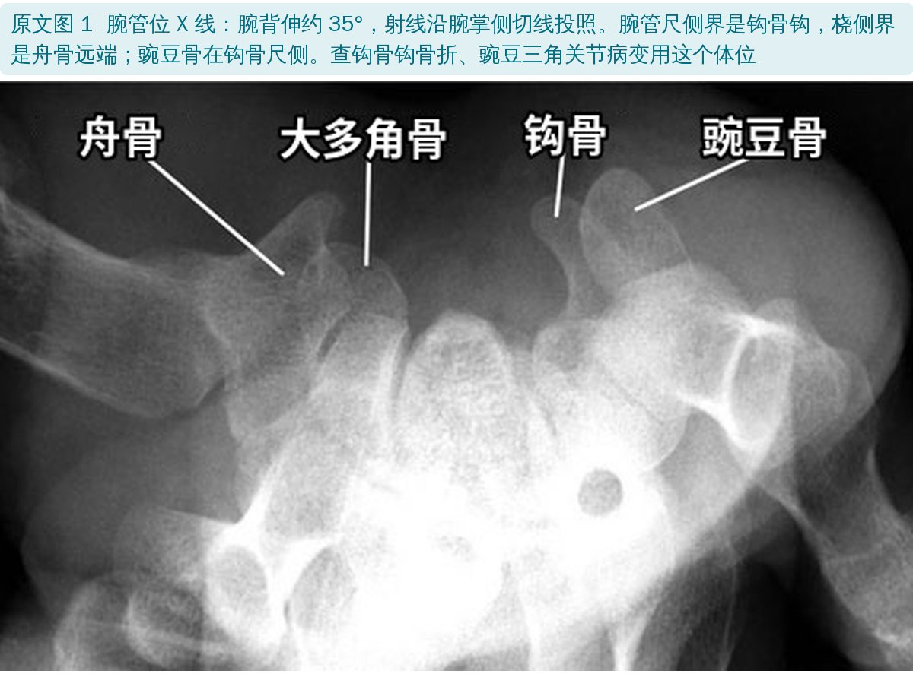
🔖原文图 1：腕管位 X 线
• 标准体位：坐位、前臂中立、屈肘 90°、肩外展 90°；拍正位＋侧位
• 加拍：旋前 30° 斜位看背尺侧；旋后 30° 斜位看掌尺侧和豌豆三角关节；腕管位（背伸约 35°）看钩骨钩
• 中立位正位片是测尺骨变异的最佳体位；X 线看不出 TFCC 本身，但能看到相关线索：尺骨正变异、尺骨茎突骨折、小凹撕脱骨折
• 关节造影曾是 TFCC 穿孔的“金标准”，但假阴性多；至少 1/3 的尸体标本存在异常交通，年龄越大退变性穿孔越多——造影阳性不等于有症状的损伤
• 超声：无辐射、便宜、能动态和多普勒检查，适合肌腱、腱鞘、神经卡压；高度依赖操作者，看不清 TFCC 内部结构，也不能查骨折
• CT 擅长隐匿骨折、骨折分型、下尺桡关节半脱位和桡尺骨旋转畸形
• 多排 CT 关节造影：骨和韧带一起看，能分清 TFCC 撕裂的位置；软组织评估有限，最好配合超声或磁共振
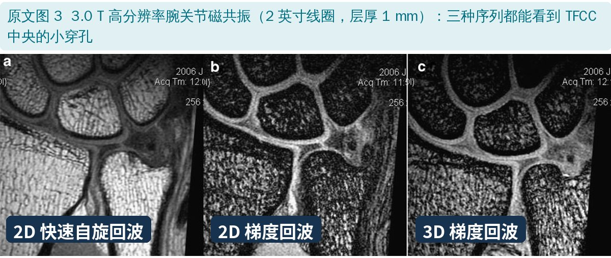
🔖原文图 3：3.0 T 高分辨率磁共振
• 腕部韧带大多只有 1～2 mm 厚，必须用薄层、高分辨率扫描；3.0 T 比 1.5 T 看月三角、尺三角、舟月韧带和 TFCC 更好
• 直接磁共振关节造影：TFCC 穿孔处在压脂 T1 上是高信号；外伤性撕裂时造影剂常进入下尺桡关节；只有液体没有造影剂，提示滑膜炎或机械刺激
• 间接造影（静脉注药后活动腕关节约 20 分钟）不用穿刺，但对 TFCC 的价值有争议，而且 TFCC 周边的正常血供强化容易被误读
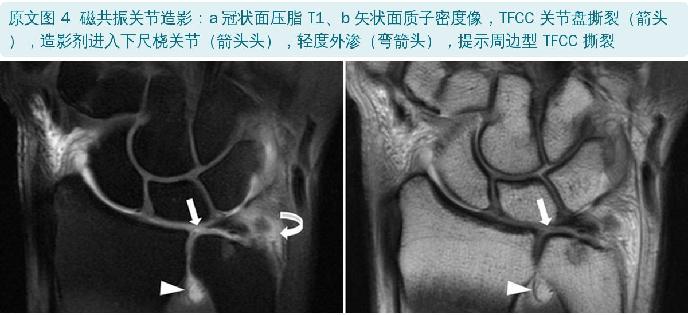
🔖原文图 4：磁共振关节造影显示 TFCC 撕裂
• 尺骨茎突骨折：约 65% 会不愈合。茎突尖不愈合（1 型）TFCC 完整、下尺桡关节稳定；茎突基底不愈合（2 型）TFCC 附着断开，下尺桡关节不稳
• 钩骨骨折：占腕骨骨折 1.7%，多是球拍、球棒柄直接顶到钩骨钩；常规正侧位很少能看到，临床怀疑就做 CT（敏感度和特异度接近 100%）。注意副骨化中心可以像骨折
• 第 5 掌骨基底骨折：尺侧腕伸肌牵拉使骨块向尺侧、近端移位，要报告是否累及关节
• 豌豆骨骨折：占腕骨骨折 1%～2%，常合并其他损伤；常规片看不到时加旋后斜位或腕管位。漏诊可致豌豆三角软骨软化、游离体、尺神经损伤；多个骨化中心是正常变异
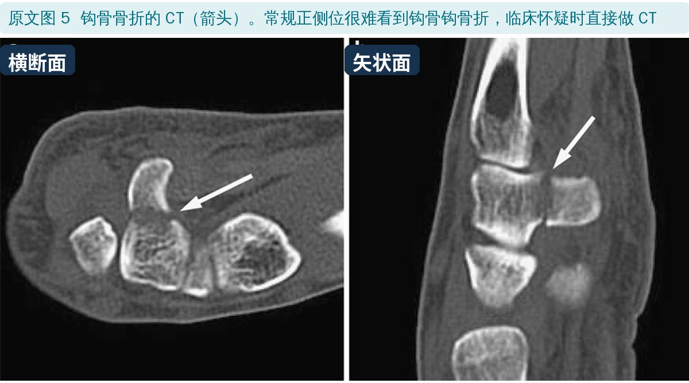
🔖原文图 5：钩骨骨折的 CT
男性是女性的 2 倍，多见于 20～40 岁利手。除了腕背痛，也可表现为尺侧腕痛。78% 的患者尺骨相对短（负变异），正常人只有 23%，但负变异不一定发病。从出现症状到确诊平均拖 1～2 年，早期靠磁共振。
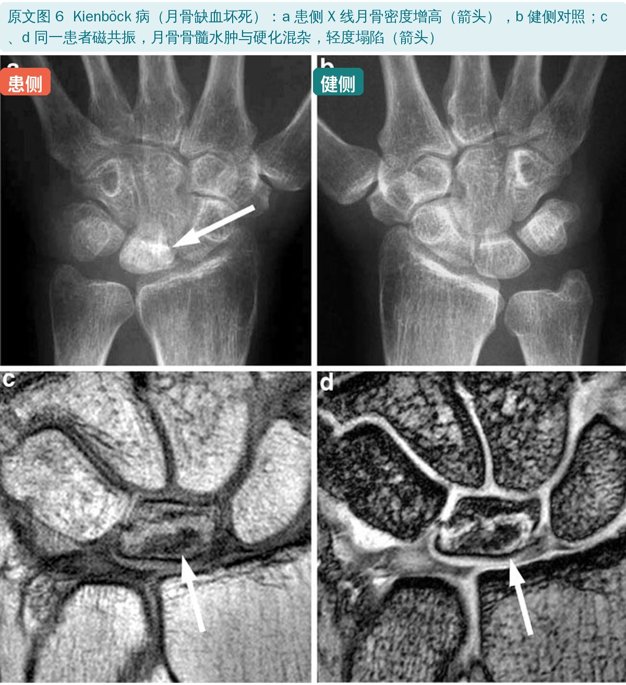
🔖原文图 6：Kienböck 病
| 分期 | 影像表现 |
|---|---|
| Ⅰ期 | X 线多正常；磁共振 T1 上月骨局灶或弥漫低信号 |
| Ⅱ期 | 月骨密度增高，大小形态不变；T1 低信号，STIR／压脂 T2 高信号 |
| Ⅲ期 | 月骨塌陷，头状骨近移；ⅢA 舟骨位置正常，ⅢB 舟骨固定旋转（“环征”） |
| Ⅳ期 | 月骨塌陷伴腕关节退变性关节炎；T2 和 STIR 上不再有高信号 |
• TFCC 损伤：Potter 等报道高分辨率磁共振敏感度 100%、特异度 90%、准确度 97%（以关节镜为标准）；显微线圈对 TFCC 各部分的诊断准确度更高，但这种线圈不普及
• 不和关节相通的撕裂（多在 TFCC 近侧面、靠尺侧附着处）比相通的穿孔更能解释症状；桡侧相通的缺损常双侧都有、无症状的人也有
• 尺侧腕伸肌腱：旋后＋屈腕＋尺偏时腱鞘受力最大，容易半脱位。X 线、CT、关节造影多正常；动态超声能直接看到肌腱滑出，磁共振只能看到腱鞘炎、看不到动态不稳。肌腱病：肌腱增粗、T1 和 T2 信号都增高
• 尺侧腕屈肌腱没有腱鞘，沿肌腱走行的压痛就提示肌腱炎；最常见的是钙化性肌腱炎，切线位 X 线可见尺骨远端的钙化
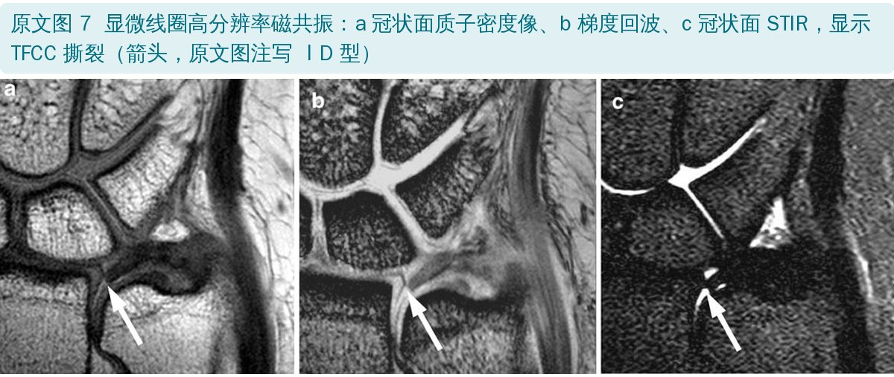
🔖原文图 7：显微线圈磁共振上的 TFCC 撕裂
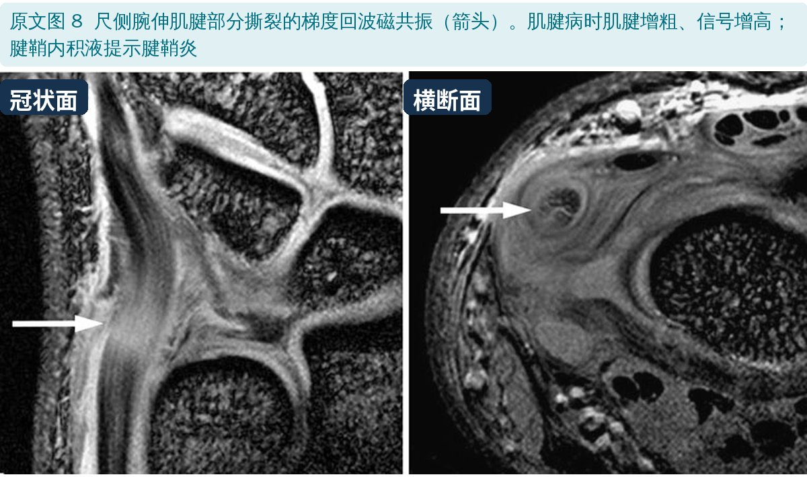
🔖原文图 8：尺侧腕伸肌腱部分撕裂
• 常见原因：腕骨骨折（尤其钩骨钩）、骨关节炎后畸形、腱鞘囊肿、异常肌肉、尺动脉瘤
• 异常肌肉在磁共振上和正常肌肉一样，超声更容易发现（可动态看收缩、和对侧比较）
• 磁共振可见尺神经在管近端肿胀、管内变扁、T2 信号增高，以及腱鞘囊肿、脂肪瘤、豌豆三角关节炎等占位
• 月三角分离：腕部第二常见的韧带性不稳。X 线常正常；关节造影要结合查体（老年人常有无症状穿孔）。CT 关节造影看月三角韧带背侧部撕裂优于磁共振；磁共振看这条韧带横断面可能比冠状面更好；直接磁共振关节造影优于平扫，间接造影帮助不大
• 腕中关节不稳：尺偏时近排腕骨突然从掌屈“咔噔”跳到背伸。静态片多正常，首选动态透视；磁共振对相关韧带撕裂的准确度还没确定
• 下尺桡关节不稳：双腕旋前位＋旋后位 CT最能显示半脱位；X 线看撕脱骨片、茎突骨折、桡骨短缩；侧位片要和健侧比
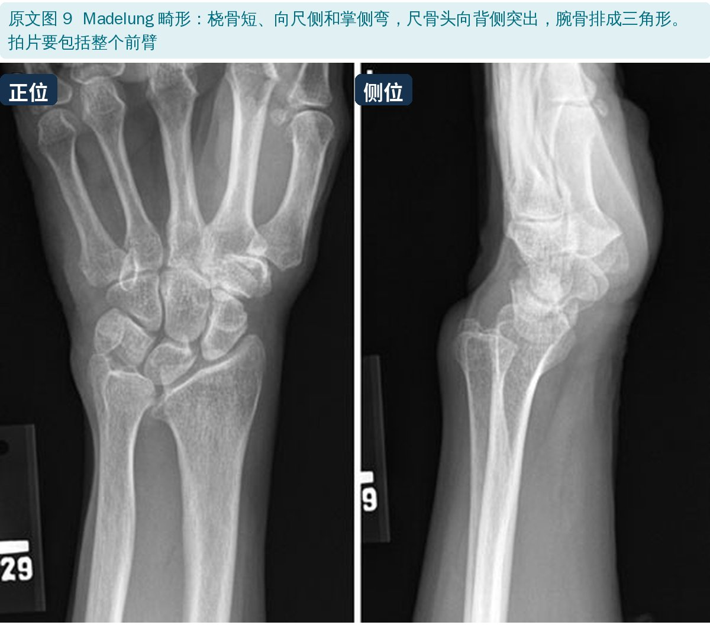
🔖原文图 9：Madelung 畸形
| 名称 | 谁撞谁 | 影像要点 |
|---|---|---|
| 尺腕撞击综合征 | 尺骨头撞月骨、三角骨 | 多为尺骨正变异；旋前握拳位片可见变异加大；月骨尺侧近端、三角骨、尺骨头软骨下硬化或囊变；磁共振更早看到骨髓水肿 |
| 尺骨撞击综合征 | 短尺骨撞桡骨远端 | 尺骨短于乙状切迹；前臂旋转时特别痛；桡骨尺侧缘扇贝样凹陷、硬化 |
| 钩月撞击综合征 | 钩骨撞月骨 | Ⅱ型月骨（与钩骨相关节）；腕完全尺偏时反复撞击；钩骨近极软骨软化 |
| 尺骨茎突撞击综合征 | 尺骨茎突撞三角骨 | 多为尺骨负变异；茎突长 >6 mm 或茎突指数 >0.12；三角骨近端软骨下改变 |
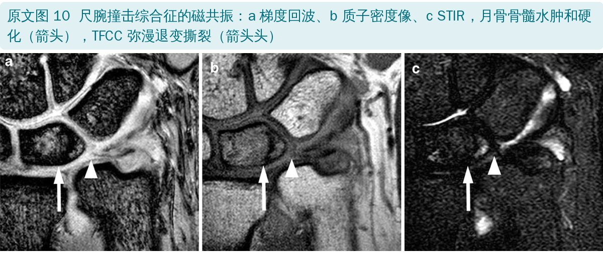
🔖原文图 10：尺腕撞击综合征
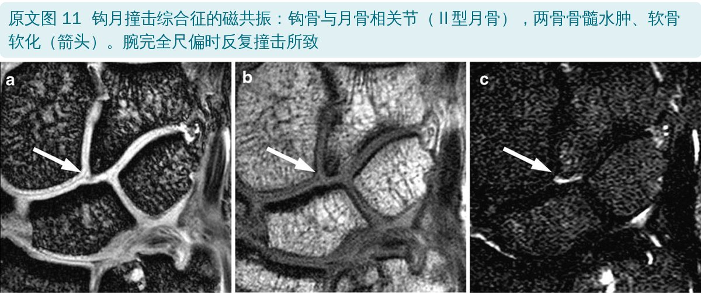
🔖原文图 11：钩月撞击综合征
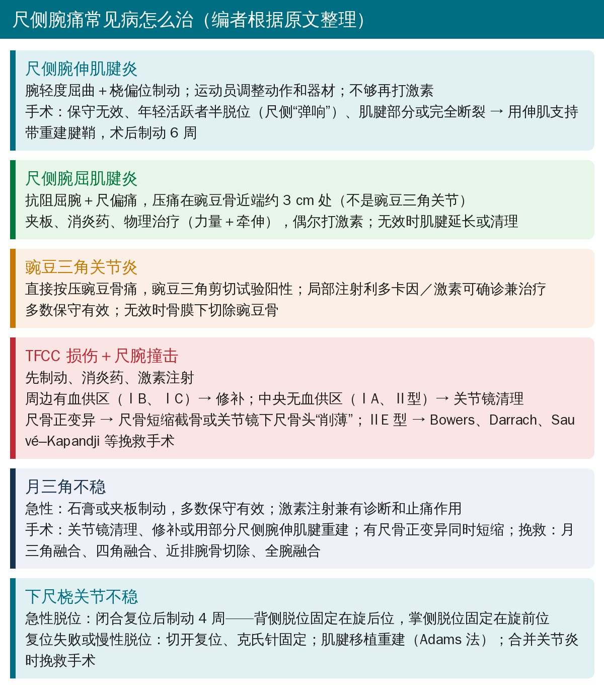
🔖尺侧腕痛常见病怎么治（编者根据原文整理）
• 保守：腕轻度屈曲＋桡偏位制动；运动员调整动作和器材、加强体能；不够再打激素。多数人保守就能好
• 手术指征：保守无效、年轻活跃者半脱位（尺侧痛伴“弹响”）、部分或完全断裂；术式是用邻近伸肌支持带重建腱鞘，术后前臂制动 6 周
• 重复屈腕所致，分钙化和非钙化。抗阻屈腕＋尺偏时痛，压痛在豌豆骨近端约 3 cm的肌腱上——和豌豆三角关节炎（痛在关节）区分
• 保守：夹板、消炎药、物理治疗（力量和牵伸），偶尔打激素；无效时做肌腱延长或清理（一个 4 人 5 腕的小样本，平均随访 20 个月，症状全部或接近全部缓解）
• 直接按压豌豆骨痛；豌豆三角剪切试验：向背侧压住豌豆骨的同时左右推动，复现症状为阳性
• 局部注射利多卡因／激素既能确诊又能止痛（效果可能是暂时的）；多数保守有效，无效时骨膜下切除豌豆骨（注意保护尺动脉、尺神经和尺侧腕屈肌腱）
| Palmer 分型 | 内容 |
|---|---|
| Ⅰ型（外伤性） | ⅠA 中央穿孔；ⅠB 尺侧撕脱（可伴茎突骨折）；ⅠC 远端撕脱（伴尺腕韧带撕裂）；ⅠD 桡侧撕脱（可伴乙状切迹骨折） |
| Ⅱ型（退变性） | ⅡA TFCC 磨损；ⅡB ＋月骨／尺骨头软骨软化；ⅡC TFCC 穿孔＋软骨软化；ⅡD ＋月三角韧带穿孔；ⅡE ＋尺腕关节炎 |
表：TFCC 损伤 Palmer 分型（据原文表 1 翻译）
• 外伤性多因摔倒手撑地（轴向负荷）或前臂过度旋前
• 先保守：制动、消炎药、激素注射
• 手术按位置定：周边有血供区（ⅠB、ⅠC）可开放或关节镜修补，愈合好；中央无血供区（ⅠA）首选关节镜清理
• Ⅱ型多由尺腕撞击或反复负荷引起，在中央无血供区，愈合差，以关节镜清理为主，术后制动 2 周再开始康复
• 合并尺骨正变异要做尺骨短缩：关节外尺骨短缩截骨，或关节镜下尺骨头“削薄”（wafer）。22 例对比两者效果都好，截骨的不愈合和取内固定更多，目前没有共识
• ⅡE 型等严重病例做挽救手术：Bowers（尺骨远端半切除＋软组织填塞）、Darrach（尺骨远端切除）、Sauvé–Kapandji（下尺桡关节融合＋切除一段尺骨保留旋转）
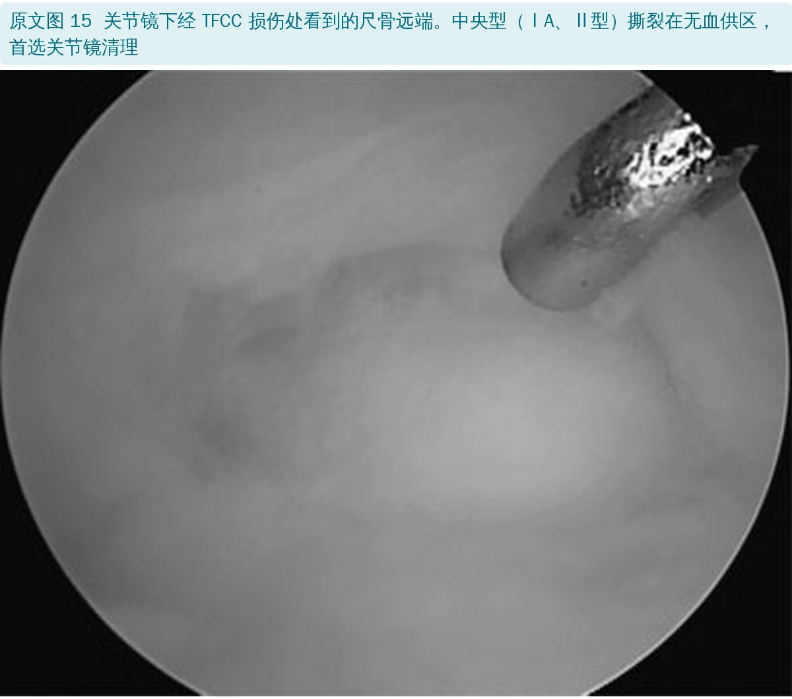
🔖原文图 15：关节镜下的 TFCC 损伤
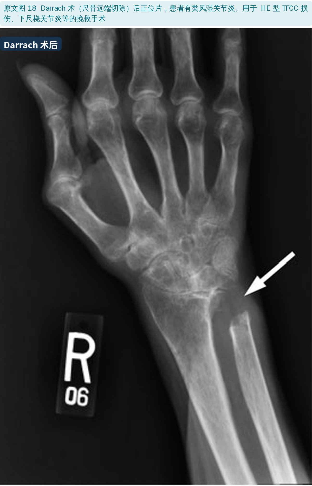
🔖原文图 18：Darrach 术后
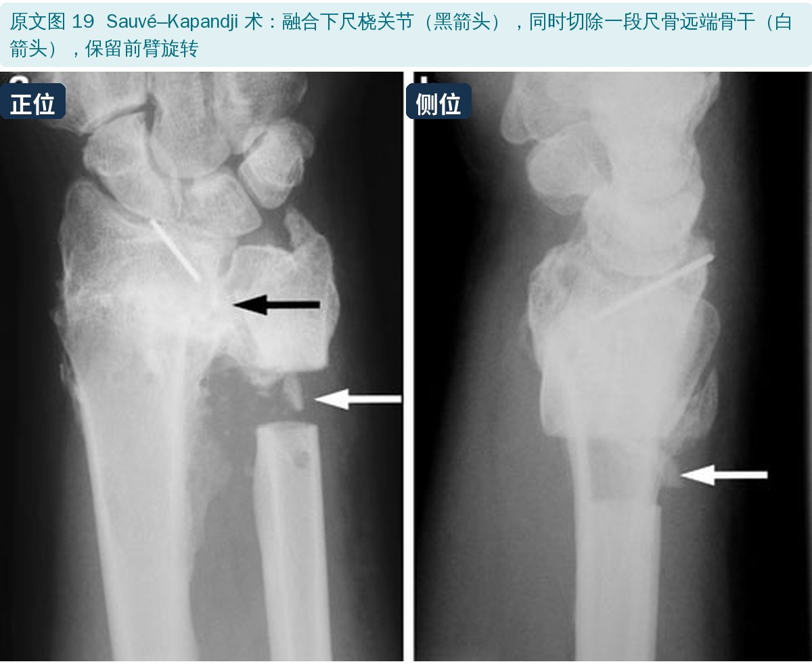
🔖原文图 19：Sauvé–Kapandji 术
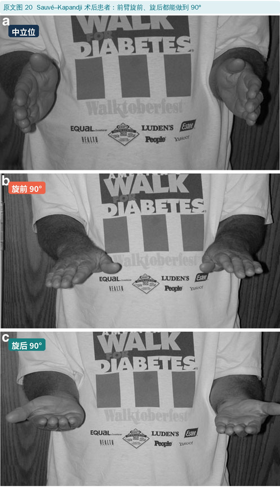
🔖原文图 20：Sauvé–Kapandji 术后保留前臂旋转
• 典型机制：前臂旋前、腕背伸＋桡偏时摔倒手撑地
• 急性期先石膏或夹板制动；激素注射对诊断和止痛都有帮助（尤其就诊晚的）；保守通常有效
• 手术指征有争议：保守失败或出现掌屈型中间体不稳（VISI）。可选关节镜清理、开放修补（作者经验是残留组织常不够修）、用部分尺侧腕伸肌腱重建；有尺骨正变异要同时短缩
• 挽救：月三角融合（清理无效时）；合并腕中关节不稳做四角融合；近排腕骨切除；全腕融合
• 急性脱位：闭合复位后制动 4 周——背侧脱位固定在旋后位，掌侧脱位固定在旋前位
• 慢性脱位或复位失败：切开复位、中立位穿针固定；必要时用 Adams 法肌腱移植重建；已有关节炎时选 Bowers、Darrach 或 Sauvé–Kapandji
• 叙述性综述，没有系统检索和证据分级；治疗部分大多是专家意见，只有零星小样本数据（如 4 人 5 腕、22 例）
• 影像部分是放射科作者所写，强调高分辨率磁共振，部分数据来自作者团队自己的研究；显微线圈当时只有一家厂商提供
• 文章发表于 2010 年，此后关节镜修补和磁共振技术都有进展，具体方案以最新指南为准
• 优点：影像方法对比和每种病的影像要点讲得全，适合作选检查的参考
• 拍片体位前后不一：开头说标准体位是屈肘 90°、肩外展 90°；讲下尺桡关节时又说测尺骨变异要“肩和肘都屈曲 90°”
• Kienböck Ⅰ期：原文写 X 线“既敏感又不特异”（both sensitive and nonspecific），但同一段又说磁共振敏感度“相当或更高”。Ⅰ期 X 线通常是正常的，这里很可能应为“不敏感”
• TFCC 外伤性撕裂哪种最常见：先说外伤性撕裂多在周边有血供区，紧接着又说 ⅠA 型（中央无血供区）最常见，两句话矛盾
• 撞击综合征名称混用：“尺骨茎突撞击综合征”一节里又写成 impingement syndrome，而“尺骨撞击综合征（ulnar impingement）”是另一种病（短尺骨撞桡骨），容易混淆；治疗部分还出现了“ulnar impaction syndrome impingement”这样的叠词
• 笔误：图 7 图注写“type ID FCC tear”（少了 T）；图 3 图注 TR 写成“18,00”；下尺桡关节治疗处引用“图 17～19”，但 Sauvé–Kapandji 术还包括图 20
• 先 X 线、再按怀疑的结构选检查：骨折想 CT，TFCC 和韧带想高分辨率磁共振／磁共振关节造影，肌腱滑脱想动态超声
• 影像阳性要和查体对上：造影交通、桡侧穿孔、老年人月三角穿孔都可能无症状
• 肌腱炎、豌豆三角关节炎、月三角损伤、TFCC 损伤都先保守：制动、消炎、调整负荷，康复里注意力量和牵伸
• 保守无效时，尺骨变异和撕裂位置基本决定了手术方式
欢迎关注骨科康复小黄公众号，获取更多物理治疗的专业知识！
📄参考文献：
Watanabe A, Souza F, Vezeridis PS, Blazar P, Yoshioka H. Ulnar-sided wrist pain. II. Clinical imaging and treatment. Skeletal Radiol. 2010;39(9):837-857. doi:10.1007/s00256-009-0842-3
原文以知识共享署名-非商业性使用（CC BY-NC）协议开放获取，版权归原作者所有。本文为非商业的学术交流中文解读：原文图 1、3～11、15、18～20 引自原文，图中中文标签为编者所加；影像选择卡、治疗速查卡和表格为编者整理。原文图 2、12～14、16、17、21 为经许可转载自其他出版物的图片，本文未使用。仅供学习交流，如有侵权请联系删除。